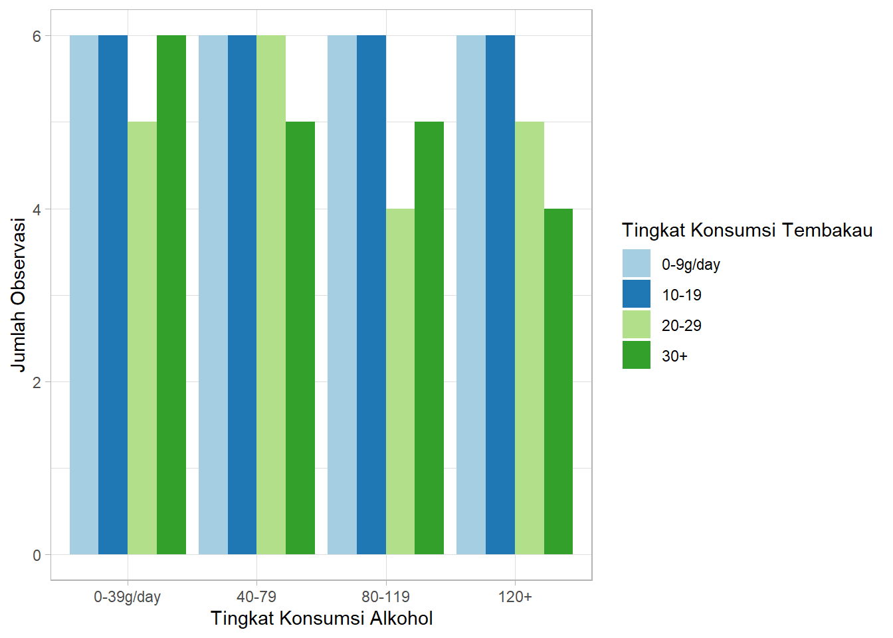

TUGAS EKSPLORASI DAN VISUALISASI DATA KATEGORIK
BAR CHART
library(ggplot2)## Warning: package 'ggplot2' was built under R version 4.3.2ggplot(data = esoph, mapping = aes(x = alcgp)) +
geom_bar()Dataset “Esoph” merupakan dataset R Studio yang menyajikan informasi seputar hubungan antara konsumsi alkohol dan konsumsi tembakau dengan kanker esofagus. Dalam hal ini, dataset “Esoph” memiliki beberapa variabel yang meliputi : - egegp : Kelompok Umur - alcgp : Kelompok Konsumsi Alkohol - tobgp : Kelompok Konsumsi Tembakau - ncases : Jumlah Individu yang terdiagnosis kanker esofagus - ncontrols : Jumlah individu dalam kelompok tersebut yang tidak terdiagnosis kanker esofagus.
Data set ini terdiri dari 88 observasi dengan total 5 variabel.
Secara default, geom_bar() menggunakan stat = “count”, yang berarti ia akan menghitung jumlah observasi (frekuensi) untuk setiap kategori dari variabel yang disebutkan pada sumbu x dan menampilkannya sebagai tinggi batang. Namun, ketika Anda menggunakan stat = “identity”, Anda memberitahu ggplot2 untuk menggunakan nilai yang sudah ada di data sebagai tinggi batang, bukan menghitung frekuensi.
BAR CHART DENGAN TABEL FREKUENSI
Membuat tabel frekuensi
freqtab <- as.data.frame(table(esoph$alcgp))
freqtab## Var1 Freq
## 1 0-39g/day 23
## 2 40-79 23
## 3 80-119 21
## 4 120+ 21Membuat Bar Chart
ggplot(data = freqtab, mapping = aes(x = Var1, y = Freq)) +
geom_bar(stat = "identity")Cara lain yang dapat digunakan untuk membuat diagram batang ketika data yang kita miliki sudah dalam bentuk tabel frekuensi adalah dengan geom_col().
ggplot(data = freqtab, mapping = aes(x = Var1, y = Freq)) +
geom_col()
Modifikasi Bar Chart
Menambahkan judul, mewarnai grafik, dan memberikan label pada setiap batang.
ggplot(data = freqtab, mapping = aes(x = Var1, y = Freq)) +
geom_col(fill = "coral", alpha = 0.7) +
labs(title = "Frekuensi berdasarkan tingkat konsumsi alkohol",
x = "Konsumsi Alkohol",
y = "Frekuensi") +
geom_text(aes(label = Freq), vjust = -0.25)GROUPED BAR CHART
ggplot(data = esoph, mapping=aes(x = alcgp, fill = as.factor(tobgp))) +
geom_bar(position = "dodge", stat = "count") +
labs(
x = "Tingkat Konsumsi Alkohol",
fill = "Tingkat Konsumsi Tembakau",
y = "Jumlah Observasi"
) +
scale_fill_brewer(palette = "Paired") +
theme_light()
PIE CHART
Menyiapkan data dengan meringkas menjadi tabel frekuensi
library(dplyr)## Warning: package 'dplyr' was built under R version 4.3.2##
## Attaching package: 'dplyr'## The following objects are masked from 'package:stats':
##
## filter, lag## The following objects are masked from 'package:base':
##
## intersect, setdiff, setequal, uniondf <- esoph %>%
group_by(alcgp) %>%
summarise(counts = n())
df## # A tibble: 4 × 2
## alcgp counts
## <ord> <int>
## 1 0-39g/day 23
## 2 40-79 23
## 3 80-119 21
## 4 120+ 21Mengitung posisi label teks sebagai jumlah kumulatif proporsi.
df <- df %>%
arrange(desc(alcgp)) %>%
mutate(
prop = round(counts * 100 / sum(counts), 1),
lab.ypos = cumsum(prop) - 0.5 * prop
)
head(df, 4)## # A tibble: 4 × 4
## alcgp counts prop lab.ypos
## <ord> <int> <dbl> <dbl>
## 1 120+ 21 23.9 12.0
## 2 80-119 21 23.9 35.8
## 3 40-79 23 26.1 60.9
## 4 0-39g/day 23 26.1 87.0- arrange(desc(alcgp)) : mengurutkan kategori alhokol dari terbesar ke terkecil
- prop=round(counts * 100 / sum(counts), 1)) : menghitung proporsi setiap kategori dalam presentase
- lab.ypos=cumsum(prop) - 0.5 * prop) : menentukan posisi teks pada pie chart agar berada di tengah-tengah
Membuat grafik Pie Chart
library(ggplot2)
library(ggpubr)## Warning: package 'ggpubr' was built under R version 4.3.3ggplot(df, aes(x = "", y = prop, fill = alcgp)) +
geom_bar(width = 1, stat = "identity", color = "white") +
geom_text(aes(y = lab.ypos, label = paste0(prop, "%")), color = "white") +
coord_polar("y", start = 0) +
ggpubr::fill_palette("jco") +
theme_void() +
labs(fill = "Konsumsi Alkohol", title = "Distribusi Konsumsi Alkohol dalam Dataset Esoph")- geom_bar(width = 1, stat = “identity”, color = “white”) : membuat bar chart dengan warna putih sebagai batas antar bagian - geom_text(aes(y = lab.ypos, label = paste0(prop, “%”)), color = “white”) : menambahkan label presentase pada tiap bagian pie chart - coord_polar(“y”, start = 0) : mengubah bar chart menjadi pie chart - ggpubr::fill_palette(“jco”) : menggunakan palet warna dari ggpubr
NEEDLE CHART
library(ggplot2)
ggplot(data = freqtab, mapping=aes(x = reorder(Var1, Freq), y = Freq)) +
geom_segment(aes(x = reorder(Var1, Freq),
xend = reorder(Var1, Freq),
y = 0, yend = Freq),
color = "skyblue") +
geom_point(color = "navyblue", size = 4, alpha = 0.6) +
geom_text(aes(label = Freq), vjust = -1.00) +
coord_flip() +
labs(
y = "Jumlah Observasi",
x = "Tingkat Konsumsi Alkohol",
title = "Distribusi Konsumsi Alkohol dalam Dataset Esoph"
) +
theme_minimal()STACKED BAR CHART
ggplot(data=esoph,
mapping=aes(x=alcgp, fill=as.factor(tobgp)))+
geom_bar(position = "stack", stat="count")+
labs(x="Tingkat Konsumsi Alkohol", fill="Tingkat Konsumsi Tembakau",
y="Jumlah Observasi")+
scale_fill_brewer(palette="Set3")+
theme_light() Interpretasi : Berwarna merah/pink dengan 30+ batang tembakau per hari : mencapai sekitar 5 di semua kategori konsumsi alkohol ada sekitar 5 orang dalam tiap kategori alkohol yang merokok lebih dari 30 batang per hari
Berwarna Ungu dengan 20-29 batang per hari : tingginya bertambah dari 5 ke sekitar 10 artinya dalam tiap kelompok konsumsi alkohol adalah sekitar 5 lagi keatas untuk yang merokok lebih dari 20 batang per hari
Berwarna kuning dengan 10-19 batang per hari : tingginya mencapai lebih dari 15. Artinya terdapat tambahan sekitar 5-7 orang yang merokok 10-19 batang per hari
Berwarna hijau dengan 0-9 batang per hari : mencapai sekitar lebih dari 20 yang mana sebagian besar orang dalam tiap kelompok konsumsi alkohol hanya merokok 0-9 batang per hari
Simpulan : Warna lebih bawah (merah dan ungu) : menunjukkan kelompok dengan konsumsi tembakau tinggi tetapi jumlah mereka sedikit warna lebih atas (kuning, hijau) : menunjukkan kelompok dengan konsumsi tembakau lebih rendah tetapi jumlah mereka banyak.
MAP
DATA SPASIAL
#Import Data
library(readxl)## Warning: package 'readxl' was built under R version 4.3.2library(sf)## Warning: package 'sf' was built under R version 4.3.3## Linking to GEOS 3.11.2, GDAL 3.8.2, PROJ 9.3.1; sf_use_s2() is TRUEdata.spasial <- read_xlsx("C:/Users/Fanndry/Documents/output_datashpsulut1.xlsx",sheet = 1)
head(data.spasial)## # A tibble: 6 × 8
## NAME_1 ID_2 NAME_2 TYPE_2 ENGTYPE_2 Longitude Latitude geometry
## <chr> <dbl> <chr> <chr> <chr> <dbl> <dbl> <lgl>
## 1 Sulawesi Utara 372 Bitung Kotam… Municipa… 125. 1.48 NA
## 2 Sulawesi Utara 373 Bolaang Mon… Kabup… Regency 124. 0.659 NA
## 3 Sulawesi Utara 374 Kepulauan S… Kabup… Regency 126. 3.28 NA
## 4 Sulawesi Utara 375 Manado Kotam… Municipa… 125. 1.52 NA
## 5 Sulawesi Utara 376 Minahasa Se… Kabup… Regency 125. 1.06 NA
## 6 Sulawesi Utara 377 Minahasa Ut… Kabup… Regency 125. 1.49 NAshp.Provsulut<- read_sf("C:/Users/Fanndry/Documents/SULUT/Export_Output_2.dbf")
shp.Provsulut## Simple feature collection with 9 features and 7 fields
## Geometry type: MULTIPOLYGON
## Dimension: XY
## Bounding box: xmin: 123.1139 ymin: 0.291731 xmax: 127.1637 ymax: 5.5662
## Geodetic CRS: WGS 84
## # A tibble: 9 × 8
## NAME_1 ID_2 NAME_2 TYPE_2 ENGTYPE_2 Longitude Latitude
## <chr> <dbl> <chr> <chr> <chr> <dbl> <dbl>
## 1 Sulawesi Utara 372 Bitung Kotam… Municipa… 125. 1.48
## 2 Sulawesi Utara 373 Bolaang Mongondow Kabup… Regency 124. 0.659
## 3 Sulawesi Utara 374 Kepulauan Sangihe Ta… Kabup… Regency 126. 3.28
## 4 Sulawesi Utara 375 Manado Kotam… Municipa… 125. 1.52
## 5 Sulawesi Utara 376 Minahasa Selatan Kabup… Regency 125. 1.06
## 6 Sulawesi Utara 377 Minahasa Utara Kabup… Regency 125. 1.49
## 7 Sulawesi Utara 378 Minahasa Kabup… Regency 125. 1.24
## 8 Sulawesi Utara 379 Sangihe Talaud Kabup… Regency 127. 4.23
## 9 Sulawesi Utara 380 Tomohon Kabup… Regency 125. 1.32
## # ℹ 1 more variable: geometry <MULTIPOLYGON [°]>#menggabungkn data
# Import library yang diperlukan
library(sf)
library(dplyr) # Pastikan library dplyr digunakan untuk left_join
gabung.Provsulut<- left_join(shp.Provsulut,data.spasial,by="ID_2",relationship = "many-to-many")
plot.Provsulut<- ggplot(data = gabung.Provsulut)+
geom_sf(aes(fill = Latitude.x))+
scale_fill_distiller("index rate", palette = "PuRd")
plot.Provsulut